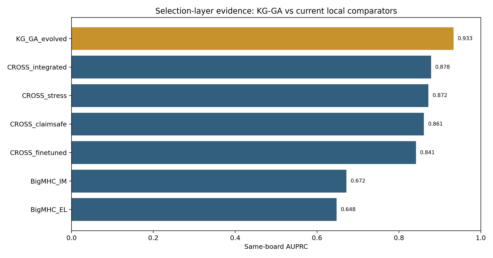
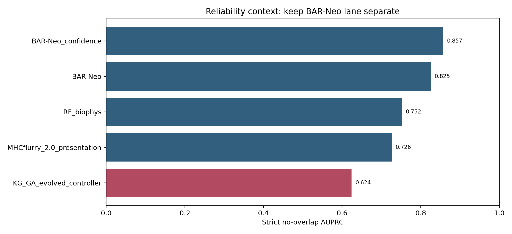
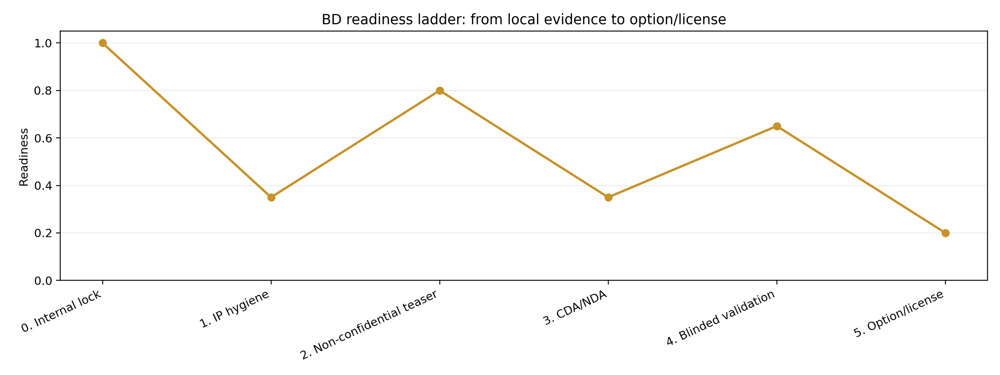
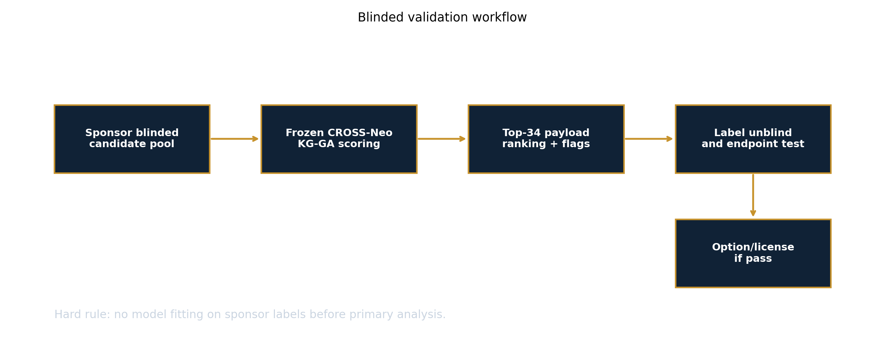

Same-Board Positioning
KG-GA against CROSS and BigMHC comparators.
The pitch is not to replace an mRNA platform. The pitch is to improve candidate selection under a fixed individualized vaccine payload budget, then prove it on blinded sponsor data under NDA.
Ready for IP-safe BD packaging, not ready for unprotected raw outreach. File invention disclosure/provisional first, send only the non-confidential teaser pre-NDA, then offer a blinded top-34 validation collaboration with option/license rights.

KG-GA against CROSS and BigMHC comparators.

BAR-Neo remains the strict no-overlap reliability lane.

What must happen before partner outreach and licensing.

NDA-stage validation without leaking labels or internals.
| algorithm | algorithm family | all AUPRC | all AUROC | frozen validation AUPRC | low medium leakage AUPRC | v6 smoke AUPRC | primary disposition |
|---|---|---|---|---|---|---|---|
| KG_GA_evolved | new_ga_controller | 0.933 | 0.943 | 0.978 | 0.757 | 0.812 | CHAMPION for retrospective + validation-like + low-leakage benchmark; freeze before prospective wetlab |
| CROSS_integrated | fixed_integrated_crossneo | 0.878 | 0.896 | 0.714 | 0.573 | 0.790 | Fixed integrated comparator; strong but less novel than KG-GA |
| CROSS_stress | stress_guarded_internal | 0.872 | 0.873 | 0.651 | 0.601 | 0.777 | Comparator or component |
| CROSS_claimsafe | claim_safe_crossneo | 0.861 | 0.864 | 0.846 | 0.617 | 0.788 | Claim-safe fallback when GA/RL proxy/product features are too risky |
| CROSS_finetuned | finetuned_internal | 0.841 | 0.863 | 0.606 | 0.669 | 0.681 | Comparator or component |
| BigMHC_IM | public_immunogenicity | 0.672 | 0.722 | 0.334 | 0.374 | 0.672 | External public comparator/component, not CROSS-Neo claim engine |
| BigMHC_EL | public_presentation | 0.648 | 0.719 | 0.308 | 0.306 | 0.866 | External public comparator/component, not CROSS-Neo claim engine |
| algorithm | algorithm family | claim track | neo strict AUPRC | neo strict AUROC | patients evaluated | primary disposition |
|---|---|---|---|---|---|---|
| BAR-Neo_confidence | production_reliability_ranker | strict no-overlap production | 0.857 | 0.980 | 1.000 | Best strict no-overlap production reliability baseline; compare separately from 2,715-board GA |
| BAR-Neo | production_reliability_ranker | strict no-overlap production | 0.825 | 0.979 | 1.000 | Best strict no-overlap production reliability baseline; compare separately from 2,715-board GA |
| RF_biophys | neoimmune_stack_baseline | strict no-overlap production | 0.752 | 0.685 | 1.000 | Comparator or component |
| MHCflurry_2.0_presentation | neoimmune_stack_baseline | strict no-overlap production | 0.726 | 0.621 | 1.000 | Comparator or component |
| KG_GA_evolved_controller | new_ga_controller | production/experiment-priority + strict no-overlap production | 0.624 | 0.897 | 82.000 | Production GA/RL branch in NeoImmune stack; strong but not clean-track allowed |
| method | n context rows | total scored | datasets with auroc | mean context AUROC | best context AUROC | min context AUROC | claim use |
|---|---|---|---|---|---|---|---|
| RF_biophys | 8.000 | 3816.000 | 4.000 | 0.891 | 0.973 | 0.753 | context-only, AUROC-only in this repo; do not use as locked same-board AUPRC unless rescored |
| PRIME | 8.000 | 3839.000 | 4.000 | 0.669 | 0.805 | 0.567 | context-only, AUROC-only in this repo; do not use as locked same-board AUPRC unless rescored |
| ESM2_Bayesian | 1.000 | 311.000 | 1.000 | 0.784 | 0.784 | 0.784 | context-only, AUROC-only in this repo; do not use as locked same-board AUPRC unless rescored |
| MHCflurry | 8.000 | 3578.000 | 4.000 | 0.696 | 0.756 | 0.637 | context-only, AUROC-only in this repo; do not use as locked same-board AUPRC unless rescored |
| BigMHC_IM | 5.000 | 2318.000 | 2.000 | 0.645 | 0.748 | 0.542 | context-only, AUROC-only in this repo; do not use as locked same-board AUPRC unless rescored |
| TransPHLA | 8.000 | 3587.000 | 4.000 | 0.681 | 0.728 | 0.580 | context-only, AUROC-only in this repo; do not use as locked same-board AUPRC unless rescored |
| DeepImmuno | 1.000 | 319.000 | 1.000 | 0.702 | 0.702 | 0.702 | context-only, AUROC-only in this repo; do not use as locked same-board AUPRC unless rescored |
| Structure_LR | 1.000 | 311.000 | 1.000 | 0.689 | 0.689 | 0.689 | context-only, AUROC-only in this repo; do not use as locked same-board AUPRC unless rescored |
| VQC | 1.000 | 319.000 | 1.000 | 0.599 | 0.599 | 0.599 | context-only, AUROC-only in this repo; do not use as locked same-board AUPRC unless rescored |
| GP_quantum | 1.000 | 319.000 | 1.000 | 0.587 | 0.587 | 0.587 | context-only, AUROC-only in this repo; do not use as locked same-board AUPRC unless rescored |
| NetMHCpan_4.1 | 1.000 | 319.000 | 1.000 | 0.567 | 0.567 | 0.567 | context-only, AUROC-only in this repo; do not use as locked same-board AUPRC unless rescored |
| module | required from partner | our commitment | pass signal |
|---|---|---|---|
| Blinded candidate input | patient_id, mutant peptide, optional WT peptide, HLA, expression, variant context, current internal scores if available | Freeze parser and score generation before label unblinding | >=95% candidate parse success and reproducible score file hash |
| Primary endpoint | binary or ordinal immunogenicity / selection / wetlab labels withheld until lock | Top-34 ranking and calibrated score per patient | AUPRC or top-34 hit-rate lift versus incumbent sponsor baseline |
| Slot-value endpoint | per-patient vaccine slot budget, ideally 20-34 | Rank candidates under a V940-like slot constraint | More validated candidates in fixed 34-slot payload without loss of HLA/source diversity |
| False-positive control | decoys, WT peptides, benign/self-like candidates, failed assay records | Report claim-safe and production-priority scores separately | Lower false-positive burden at matched sensitivity |
| Explainability | no extra confidential biology required | Per-candidate reason codes, uncertainty, and audit flags | Sponsor scientist can adjudicate top candidates without opening model internals |
| Wetlab translation | assay format, HLA cell line/APC constraints, readout thresholds | Mutant/WT/decoy control map and top-N plate-ready export | Assay-ready list accepted by wetlab operations |
| stage | status | deliverable | exit criterion | share level |
|---|---|---|---|---|
| 0. Internal lock | done | Frozen local KG-GA comparison package | AUPRC 0.933 on 2,715-row board with explicit caveats | internal only |
| 1. IP hygiene | next | Provisional patent / invention disclosure | Claims cover KG-guided evolutionary neoantigen selection, audit gates, and assay-control generation | attorney / tech transfer |
| 2. Non-confidential teaser | ready | One-page BD teaser with masked method details | No code, no full feature list, no exact candidate tables | pre-NDA |
| 3. CDA/NDA | next | Mutual NDA and blinded benchmark data-use terms | Sponsor cannot use submitted scores to train without written license | legal |
| 4. Blinded validation | design-ready | Frozen scoring container/API run on sponsor blinded candidates | Pre-specified top-34 enrichment/AUPRC lift vs incumbent selection stack | NDA |
| 5. Option/license | conditional | Field-limited oncology neoantigen selection license | Payment tied to validation pass, clinical program use, and milestones | BD/legal |
| claim | wording | why | do not say |
|---|---|---|---|
| Allowed pre-NDA | Retrospective CROSS-Neo prioritization engine with AUPRC 0.933 on a 2,715-candidate local board | Supported by same-board metrics | Clinically validated or Moderna-ready efficacy proof |
| Allowed under NDA | Frozen algorithm can be evaluated on blinded sponsor candidate pools for top-34 enrichment | Validation protocol is pre-specified | Will outperform sponsor stack before seeing blinded result |
| Comparator boundary | Same-board comparison beats BigMHC_IM/EL and fixed CROSS-Neo; public context includes RF_biophys/MHCflurry/PRIME/TransPHLA | Different benchmark tables have different leakage/overlap caveats | Universal SOTA over all public algorithms |
| Strict reliability boundary | BAR-Neo_confidence is still the strict no-overlap reliability winner in current local stack | Strict AUPRC 0.857 vs KG_GA_controller 0.624 | KG-GA wins every split |
| Wetlab boundary | Assay-ready prioritization and control design | No prospective mutant-vs-WT/decoy readout yet | Immunogenicity proof |
| folder | item | share timing | contains |
|---|---|---|---|
| 00_non_confidential | MODERNA_NONCONFIDENTIAL_TEASER.md | pre-NDA | Value proposition, masked metrics, validation ask, no algorithm internals |
| 01_validation_protocol | MODERNA_BLINDED_VALIDATION_PROTOCOL.md | NDA | Input schema, frozen scoring, endpoints, success criteria |
| 02_metrics | moderna_same_board_comparator_metrics.tsv | NDA | KG-GA vs CROSS/BigMHC same-board metrics |
| 02_metrics | moderna_strict_reliability_metrics.tsv | NDA | BAR-Neo, RF_biophys, MHCflurry, KG-GA-controller strict no-overlap context |
| 03_claim_boundary | moderna_claim_boundary.tsv | pre-NDA summary / NDA detail | Allowed claims and blocked claims |
| 04_deal | MODERNA_OPTION_LICENSE_TERM_SHEET_SCAFFOLD.md | after technical interest | Option/license terms scaffold; not legal advice |
| 05_ip | INVENTION_DISCLOSURE_SCAFFOLD.md | attorney / tech transfer before outreach | Provisional-patent disclosure skeleton and claim areas |
| 06_outreach | MODERNA_OUTREACH_EMAIL_AFTER_IP.md | after IP hygiene and contact selection | Short pre-NDA email draft that does not disclose internals |
| company | route | url | why | pre nda action | confidentiality note |
|---|---|---|---|---|---|
| Merck | Business development and licensing (BD&L) | https://www.merck.com/research/business-development-and-licensing/ | Official Merck collaboration route; includes oncology, vaccines, and enabling/platform technologies. | Use non-confidential teaser only; request CDA/NDA and blinded validation discussion. | Do not send source code, feature list, candidate tables, or scoring weights before CDA/NDA. |
| Merck | Corporate contact fallback | https://www.merck.com/contact-us/ | Fallback for routing to BD&L or oncology external innovation if web BD intake is not available. | Ask for the correct BD&L contact for individualized neoantigen vaccine selection technology. | General contact route; keep all technical details non-confidential. |
| Moderna | Official contact page | https://www.modernatx.com/en-US/contact-moderna | Official Moderna page lists corporate contact routes, HQ, media, investor, and general contact channels. | Use only to request routing or a warm BD contact; do not disclose internals through general inboxes. | No public BD-specific email was verified here; treat as routing only, not a confidential submission portal. |
| Moderna/Merck | Warm intro / conference BD route | N/A | Best practical route for a sensitive platform/selection-layer pitch when no public Moderna BD inbox is verified. | Send one-paragraph teaser and ask for CDA/NDA-enabled technical diligence. | Do not attach NDA-stage validation protocol unless CDA/NDA is in place. |
Seungho Cook
Email: kukshomr@snu.ac.kr
X/Twitter: @Ho15421542
/home/seungho/personal/THCA_data_analysis/project/results/cross_neo_moderna_bd_package_2026_05_11/home/seungho/personal/THCA_data_analysis/project/results/cross_neo_moderna_bd_package_2026_05_11/MODERNA_NONCONFIDENTIAL_TEASER.md/home/seungho/personal/THCA_data_analysis/project/results/cross_neo_moderna_bd_package_2026_05_11/MODERNA_BLINDED_VALIDATION_PROTOCOL.md/home/seungho/personal/THCA_data_analysis/project/results/cross_neo_moderna_bd_package_2026_05_11/MODERNA_OPTION_LICENSE_TERM_SHEET_SCAFFOLD.md/home/seungho/personal/THCA_data_analysis/project/results/cross_neo_moderna_bd_package_2026_05_11/pre_nda_send_packet.zip